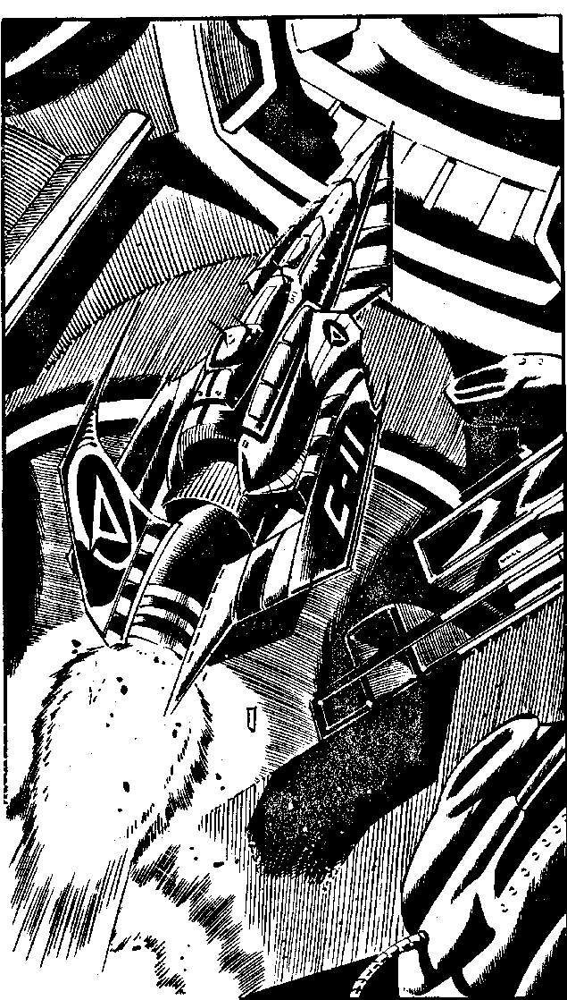

255
You tell Bloodhound that the Phocian pirate guarding the nearest Corsair ship is under mind control. Bloodhound suggests that you look into this while he returns to Earth in 3033 AD, and reports to Yelov that he has successfully killed you, so that you can operate without fear of further trouble from your comrades. When he has done that, he will explore the Timelines and help you with your mission. You thank him. 'Good luck and look after yourself, my friend,' he calls, and with that he returns to his machine, Hunter, which winks out suddenly. You look towards the sleek Phocian ships and see the pirate enter one and seal the hatch. As you watch, the Corsair's Fusion Drive fires up and the ship hurtles out of the Starport, breaking the noise and launch regulations as it does so.
If you wish to examine Yelov's file on CAIN's records, when you return to Falcon's Wing, turn to 15. You may look at Yelov's file whenever you are in your machine, but don't forget to remember the paragraph you are at before going to 15, as no further options are given there. When you are ready, do you:
| Return to Falcon's Wing and follow Bloodhound in order to confront Agidy Yelov? | Turn to 45 |
| Investigate the second Corsair ship? | Turn to 71 |